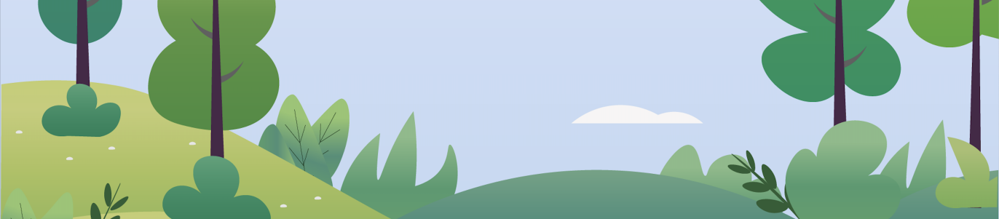
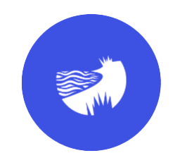

Landscapes
OPEN LAND
In the open countryside, you'll discover hedgerows, field drains, and grasslands, filled with different herbs, nuts, fruits, and berries.

WATERWAYS
By the seaside, you'll come across salt marshes and beaches with seaweed and herbs. Along freshwater lakes, streams, and rivers, herbs and flowers thrive.

FOREST
In both coniferous and deciduous forests, one can discover mushrooms, leaves that are safe to eat, shoots, herbs, berries, and nuts.
CITIES AND TOWNS
In urban parks, harbors, and greenspaces, you will find herbs, fruits, nuts, and berries.